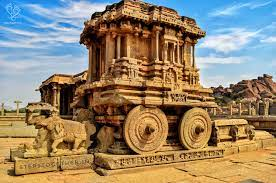

UNESCO World Heritage Site
Location Hampi (town), Vijayanagara district, Karnataka, India
Includes Virupaksha Temple
Criteria Cultural:
Reference 241
Inscription 1985 (9th Session)
Endangered 1999–2006
Area 4,187.24 ha
Buffer zone 19,453.62 ha
Website Archaeological Survey of India – Hampi
Coordinates 15°20′04″N 76°27′44″E
Hampi is located in KarnatakaHampi
Location of Hampi
Show map of Karnataka
Show map of India
Hampi or Hampe (Kannada: [hɐmpe]), also referred to as the Group of Monuments at Hampi,
is a UNESCO World Heritage Site located in Hampi (City),
Ballari district now Vijayanagara district, east-central Karnataka,
India.[2] Hampi predates the Vijayanagara Empire;
it is mentioned in the Ramayana and the Puranas of Hinduism as Pampa Devi Tirtha Kshetra.
[
3][4] Hampi continues as a religious centre, with the Virupaksha Temple,
an active Adi Shankara-linked monastery and various monuments belonging to the old city.
Hampi was the capital of the Vijayanagara Empire from 1336 to 1565,
when it was abandoned.[3] It was a fortified city. Chronicles left by Persian and European travellers,
particularly the Portuguese, say that Hampi was a prosperous,
wealthy and grand city near the Tungabhadra River, with numerous temples, farms and trading markets.
By 1500 CE, Hampi-Vijayanagara was the world's second-largest city, after Beijing,
and probably India's richest at that time, attracting traders from Persia and Portugal.
The Vijayanagara Empire was defeated by a coalition of Muslim sultanates;
its capital was conquered, pillaged and destroyed by Sultanate armies in 1565,
after which Hampi remained in ruins.
Located in Karnataka near the small modern town of Hampi with the city of Hosapete 13 kilometres (8.1 mi) away,
Hampi's ruins are spread over 4,100 hectares (16 sq mi) and it has been described by UNESCO as an "austere, grandiose site" of more than 1,600 surviving remains of the last great Hindu kingdom in South India that includes "forts, riverside features, royal and sacred complexes, temples, shrines, pillared halls, mandapas, memorial structures, water structures and others". Etymology
The name was derived from the old name of the Tungabhadra River which was Pampa, so the name Hampi is the English version of the Kannada name Hampe. Location
Hampi Vijayanagara in early 16th century. The sacred centre featured major Hindu temples and attached
markets; the urban core included the royal centre; suburban satellites were spread from what is now Gangawati to Hosapete.